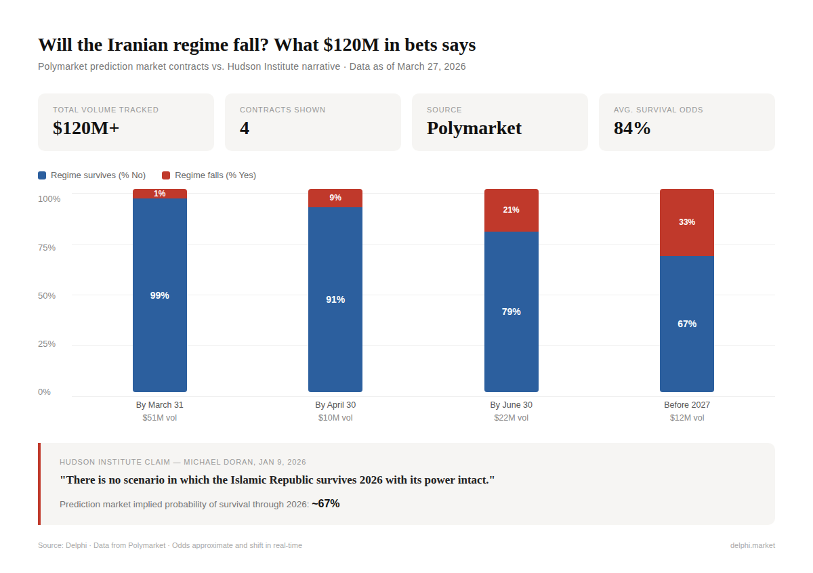

The prediction market verdict on "The Ayatollah's Regime Is Crumbling"
On January 9, 2026, the Hudson Institute published one of the most definitive claims in recent foreign policy commentary. In a piece titled “The Ayatollah’s Regime Is Crumbling,” Senior Fellow Michael Doran wrote:
“ No matter what happens next, there is no scenario in which the Islamic Republic survives 2026 with its power intact.”
With no conditions he went further:
"The Islamic Republic is dying. It may suppress this round of protests. The leadership may survive this year. But it will not emerge from 2026 with its authority, cohesion, or capacity preserved."
Though it’s an analytically rich piece it is directly and measurably contradicted by over $120 million in prediction market volume. Real money wagered by thousands of traders that are financially incentivized to be right.
This article breaks down what the Hudson Institute got right, what it got wrong, and what the prediction markets are actually telling us about the future of the Islamic Republic.
Where the money disagrees
According to Delphi, multiple contracts that have collectively attracted over $120 million in trading volume price whether the Iranian regime will fall.

Across $95 million on these four contracts alone, the market consensus is that there is only about a one-in-three chance, the regime falls at all before the end of 2026.
The Hudson Institute says “there is no scenario” in which the regime survives intact. Traders with $120 million on the line say there’s a roughly two-thirds chance it does.
What the Hudson Institute got right
Doran's analysis of the regime's structural weaknesses is largely sound, and prediction market traders would likely agree with several of his core observations:
- The currency collapse is real. Doran writes "when the gap between the official and market exchange rates reaches 35 to 1, the rial no longer adequately functions as money."
- The protests are real and significant. The December 2025-January 2026 uprising was indeed the largest sustained unrest since 2022. Doran is correct that it "hardened into open demands for regime change."
- The regime is weaker than before. On this, the markets broadly agree. But weakened is not fallen, and that’s where Doran’s analysis makes a leap markets don’t support.
What the markets are actually pricing
The prediction market data tells a more nuanced story than either "collapse is imminent" or "nothing will change."
Short-term (Next 30 days): The regime is safe. At 99% “No” on the March 31 contract and ~91% “No” on April 30. Despite ongoing strikes, the assassination of Khamenei, and military operations across 20+ cities, the IRGC's grip on internal security has not cracked.
Medium-term (by June 30): Unlikely but possible. The June 30 contract prices regime collapses at roughly 21%. A summer escalation such as a ground invasion and economic meltdown, could theoretically topple the system. But four-in-five odds say it won’t happen.
By the end of 2026: Uncertain but still favoring survival. The end-of-year contract sits around 33% for regime fall. Which has meaningful risk but far from certainty Doran is projecting.
The bottom line
Michael Doran wrote a piece that is well-sourced and has analytical sophistication however, it’s ultimately wrong in its central claim. The Islamic Republic is damaged, weakened, and facing pressures that are genuinely unprecedented in combination. On that, the markets agree.
But "unprecedented pressure" and "no scenario in which the regime survives" are not the same statement. One is analysis. The other is narrative.
Over $120 million in prediction market volume tells us that the most likely outcome is the one Doran declares impossible: the Islamic Republic, battered and diminished, is still standing at the end of 2026.